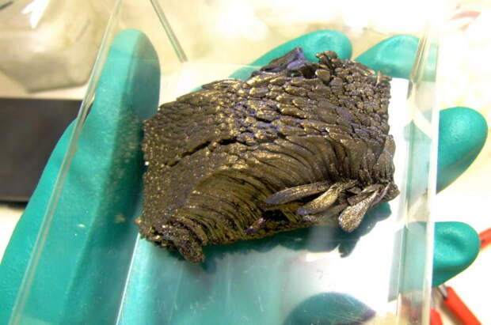

Европий
Евро́пий (химический символ — Eu, от лат. Europium) — химический элемент 3-й группы (по устаревшей классификации — побочной подгруппы третьей группы, IIIB) шестого периода периодической системы химических элементов Д. И. Менделеева с атомным номером 63.Относится к семейству лантаноидов.Простое вещество европий — это мягкий редкоземельный металл серебристо-белого цвета, легко окисляющийся на воздухе.
Первыми спектральные линии, отнесённые впоследствии к европию, наблюдали Крукс (1886) и Лекок де Буабодран (1892). Демарсе обнаружил полосу спектра элемента в самариевой земле в 1896 году, а в 1901 году смог выделить элемент, описал его и дал ему название в честь Европы

Европий получают металлотермическим восстановлением оксида Eu2O3, а также электролизом расплава хлорида EuCl3. Европий применяется как поглотитель нейтронов (в ядерных реакторах), соединения европия – как компоненты люминофоров (в телевизионной и лазерной технике). Радиоактивные изотопы 154Eu (период полураспада T1/2 8,59 года) и 155Eu (T1/2 4,76 года) используются в γ-дефектоскопии, 155Eu – в медицинской диагностике и др.